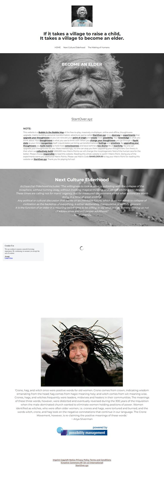

Become An Elder on Strikingly
'Crone, hag, and witch once were positive words for old women. Crone comes from crown, indicating wisdom emanating from the head; hag comes from hagio meaning holy; and witch comes from wit meaning wise. Crones, hags, and witches frequently were leaders, midwives and healers in their communities. The meanings of these three words, however, were distorted and eventually reversed during the 300 years of the Inquisition when the male-dominated church wanted to eliminate women holding positions of power. Women identified as witches, who were often older women, i.e. crones and hags, were tortured and burned, and the words witch, crone, and hag took on the negative connotations that continue in our language. The Crone Movement, however, is re-claiming the positive meanings of these words.'
~ Anya Silverman